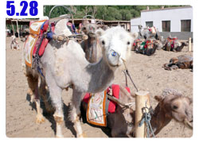

偉哉莫高窟
昨天夜裡像應酬喝醉的爸爸一樣搖晃著回到招待所，雖然很累很愛睏，但還記得要先去沖個熱水澡，然後再睡大頭覺。
其它什麼整理遊記、洗衣服這些瑣碎的事情，都等睡醒再說吧，已經快連眼睛都睜不開了。~_~
安穩的睡到自然醒，看看手錶還沒早上九點，還不算太晚，睡飽的感覺真是好。
泡一杯熱紅糖當早餐，開始洗髒兮兮的衣服，拉出童軍繩綁在窗台和床頭，就這麼曬了起來。
太陽很大，空氣很乾燥，衣服洗好我都懶的扭乾，反正要不了多久就會乾了。

洗完衣服之後，才開始整理昨天夜騎的遊記，回想起來真是一件很疲憊的事情，沒事這麼衝幹嘛@@"
等把昨天未完成的工作都搞定之後，就可以去街上走走了。
昨天夜裡喝酒的地方是『敦煌夜市』，在白天這裡就變成『沙州市場』，各式各樣只要是說的出來的東西都有在賣。
照片中是正在製作辣椒粉的老闆。
在步行區中看到大同小異的攤位都在賣蜜餞，不僅賣的東西一樣、連攤位的樣子都一模一樣。
剛好我還蠻喜歡吃蜜餞的，沒辦法麻，畢竟是宜蘭人XD
照片中所有你看到的東西都可以試吃，吃一個不夠就吃兩個，吃完記得要批評一下：
『這個不甜，沒味道』『有籽的我不喜歡』『要剝殼吃起來太麻煩了』
一邊批評一邊吃，不然你每試吃一樣，老闆就會主動的開始幫你打包你吃過的東西。
有幾樣味道還真是不錯吃，所以我就買了冰梅、杏包仁和聖女果，一斤都是十塊或十二塊，還不算太貴。
付過錢之後我又隨手拿了兩個很好吃，但是比較貴的蜜餞邊走邊吃，結果連自己買的三包蜜餞都忘了拿~_~
還好之後有想起來，發現剛剛好像付錢買了什麼東西，可是手上怎麼是空的，整個很健忘。
午餐就在沙州市場中吃，賣吃的店之多，雖然這裡是敦煌，一個西北的小地方，但是大江南北的各種料理這邊都吃的到。
我想吃點當地口味的東西，找一間人坐滿到門口的小店，點了一份敦煌拉條子。
剛送上來的時候，麵跟料是分開的，要自己把它組合起來。

麵就是手工麵條，香Q中帶點彈牙，料則是各種的蔬菜，包括有茄子、冬瓜、青椒、番茄、辣椒等。
和在一起還蠻好吃的，醬料的口味有點辛辣，吃的很開胃。
午餐解決之後，下午的目標就是敦煌的招牌之一，列名世界遺產的『莫高窟』。
向招待所的人詢問該怎麼搭公交車過去，因為距離市區有25公里，搭計程車不知道要被坑多少？
我住的招待所地段超好，除了前面是夜市、隔壁還是敦煌博物館跟敦煌劇院，
而公交車就在距離招待所步行三分鐘距離的地方有站牌。
每二十分鐘一班車，車資八塊錢，市區到莫高窟車程三十分鐘。

搭車快速前往，沿路上會先經過昨天半夜我騎過的路，回想起來真是可憐，一個人夜裡還在騎車，但總算都過去了。
到了莫高窟當然就是買票準備參觀囉～
前情提要一下，黃河的門票要30元、嘉峪關的門票要60元、兵馬俑的門票要90元。
那莫高窟的門票請猜要多少錢？
想好了嗎？心裡有個底了嗎？
因為還沒到敦煌之前，我就已經在賣冰棒的小販那邊打聽過了門票的價錢，那時候已經被打敗過了，
所以當我掏出人民幣一百六十元買票的時候，心中淌血的程度已經平緩許多。

夏天是旺季，票價要160元，外國人更貴，要180元。
冬天是淡季，淡到票價只要半價80元就夠了，想撿這個便宜就冬天再來參觀吧。

飲料更貴，可樂外面一瓶兩塊五，這邊賣六塊，水一瓶外面賣一塊，這邊要五塊，冰棒外面賣五毛，這邊要兩塊。
每問一個東西的價錢，我就吐血100CC，最後什麼也沒買。
進入莫高窟之前是佛塔，年代不明，但應該不是太珍貴的東西，不然不會就沿路這麼放著。
拿著相機準備要好好的參觀和記錄這偉大的石雕和壁畫遺跡，在入口就被擋了下來，禁止相機、攝影機、香菸、背包等東西進入。
乖乖的拿去寄存，然後從入口進去，進去後也不能自己隨便亂跑，工作人員會依照人數，安排成小團體，
大概十幾個人一組，然後每一組就從敦煌研究所派一名解說員，來作長達兩個小時的講解說明。

莫高窟有四百多個石窟，可是全部都裝上了門，加上了鎖，只有在解說員陪同的情況下才可以進入。
石窟內都是沒有燈光的，解說員會用一個鵝黃色的手電筒，跟著她的說明照亮對應的部分。
當解說員離開一個洞窟的時候，若沒有下一組團體進來參觀的話，就要隨手把門給鎖起來，以免好奇的遊客亂闖。

在不讓參觀者感覺到不受尊重的情況下，莫高窟的保護工作好的令人敬佩。
四百多個石窟，要是每一個都花一分鐘隨便看完，加上石窟和石窟間走路的距離，起碼要花上一整天的時間。
但是參觀的時間不會那麼長，因為所開放的石窟，只有少少的十個。

各自挑了最具有代表性和可看性的石窟做介紹。
因為莫高窟是佛教的寶地，經歷了許多朝代的整建和維護。
新的朝代就在舊的朝代的壁畫上，塗上泥巴畫上新的壁畫。
腳上踩的泥磚，也是一個朝代一個朝代的覆蓋上去，歷經數千年，已經變成多朝代共同創作的藝術品。

相當可惜裡面不能拍照，但是在解說員的說明下，也聽到了很多很有趣的知識。
他們一定會提到美國文物盜賊－蘭豋，利用化學溶劑和膠布偷走牆上二十六幅壁畫的事情。
偷走那麼多，結果只復原了其中的十一幅，剩下的歷史遺產就從此消失。
還有藏經閣裡的經書，裡頭本來有五萬多卷珍貴的書籍，保存千年仍完好，將石窟封閉抹上泥巴畫上壁畫，就是為了怕被發現。
但在中國最亂的八國聯軍時期，還是被人發現了，那時候正值戰亂，沒有人有心思管西北小鎮發現的文物有什麼價值。
結果就被當時這裡的掌權人士，大批大批的賣掉，世界各地的考古學家聞風而至，都到這邊尋寶。
日本人、法國人、俄國人，所有人都來或騙、或買、或偷，百分之八十以上的珍貴經書都外流到世界各地。
所留下的只是不完整的殘破經文典籍，卻也造就了世界各地研究敦煌的熱潮。
中國研究敦煌的學者，說這個藏經閣，是敦煌永遠的傷心地...
莫高窟值得一看的東西分為三部分
一：建築，現有石窟492個，石窟都是挖鑿出來的，不同的石窟或大或小，都有自己獨特的架構，屋頂有的是方形，有的是人形，
從外頭酷熱的天氣，一進到石窟中，馬上就像進入冷氣房一樣清涼，這就是石窟冬暖夏涼的奧妙。
石窟主要分為三層，有的很小、有的高達三十幾公尺，或是寬達數十公尺，但皆為從石頭中挖掘出來，而非人工材料建築的。
石窟的編號工作，最首先是由法國人所為，他們同時也帶走了最珍貴的藏經典籍，
接下來是由張大千大師替莫高窟編號，他很喜歡這邊的壁畫，最後才是由敦煌研究院自己編號至今。
二：壁畫，牆上許多的壁畫，面積達四萬五千平方公尺，經歷一千三百多年，顏色依然鮮豔如昔，完全不受風化和氧化的影響。
怎麼能保存的這麼好？因為這些著色的顏料，都是用有顏色的礦石磨粉而成，性質穩定不易起變化，所以才能保存千年。
壁畫除了數以千計的小佛像，還有一千年前就有的連環漫畫，用壁畫訴說著各式各樣的佛教故事。
悉達多的前世、張騫通西域的原因、捨身救老虎的小王子，每一幅連環畫都是那麼樣的生動。
還有將經文畫成壁畫、將過去的生活、建築、樂器、穿著、交通畫成壁畫。
研究人員說，敦煌的這些壁畫，就是一座無價的博物館。
三：雕像，彩塑雕像有兩千四百餘身，石窟中的雕像有比人還小的，也有高達三十幾公尺的大佛。
解說員說盛唐時期的雕像最為細緻，不論是手指的動作，臉部的表情或是衣服的皺褶，都是上上之作。
宋朝的也蠻被解說員誇獎的，可惜宋朝的雕像都放在石窟的第一層，結果幾乎全部都被破壞光光，只留下僅存的幾個。
最好笑的是，只要雕像是清朝的，解說員就會說這是清朝做的，做工粗糙、人物肢體僵硬，就不多做介紹了。
非常非常的不給清朝面子，但是比較過盛唐時期的作品和清朝的作品，真是越古代的東西越美麗，近現代的反而不行。
我很喜歡西夏的蓮花磚地板，相當的漂亮，花紋很像夾心餅乾，我才發現我對西夏完全不了解，這是個什麼樣的朝代呢@@"
十個洞窟，各具特色，解說員親切又專業的說明，會讓人深深覺得這一百六十元沒有白花，
反而是感到欣慰，自己能夠在有生之年到敦煌參觀莫高窟，真是一種榮幸。
兩個小時的解說很快的就過去了，非常的令人感動，每進入一個石窟，都是不同的風貌、不同的藝術傑作。

相機不能帶進來的關係，展區柵欄外面會有很多拿著相機的人要你擺姿勢，然後幫你拍照。
對於喜歡站在景點前面留下紀念，表示自己來過的人來說，這還算是不錯的服務，稍微打聽一下價錢，一張照片要價十塊。
依依不捨的離開莫高窟，在這邊的攤販區逛一下。
攤販區分為兩種，給有錢人的，裡面賣些壁畫的臨摹畫，畫的真是非常的好，而標價牌上面標示有人民幣、美金和日幣，
平均價錢都在人民幣五千左右，你就知道在這邊買的下手的是什麼樣消費能力的觀光客。

便宜的小販就是我逛的主要目標了，看到很多很漂亮的絲綢，和一些小飾品，就很想買一條絲綢當作頭巾把臉給包起來。
因為接下來就要進入新疆，海拔比甘肅整個要高出很多，沙漠地形則是天天都會經過，高溫高熱的氣候，不做點預防措施有點危險。
我試包了一條黑色的頭巾，老闆笑得很開心說『你這麼一包看起來就跟穆斯林一樣』。
但是黑色的太吸熱了，這一條材質也很厚，都快喘不過氣來，改買一條藍色的比較透氣的頭巾，二十元。

接著看到一個先生在畫白色襯衫，詢問過意願之後才開始拍照，
他說這邊商店攤販賣的衣服每一件都一樣，所以他自己畫，每一件都是獨一無二的。
我在這邊買了一條絲綢之路的小方巾，雖然不知道買這個要幹嘛，
但是我很欣賞他的想法，可是衣服很貴買不起，所以就買點小東西。

明信片也是我會採購的商品，自己拍照怎麼拍也沒有別人拍的好，明信片本身也就很具有旅行的味道。
挑了一個敦煌十四景的組合，裡面有二十二張，標價人民幣四十元，店員直接開價就是說半價賣給我，算二十就好了。
是不是這麼誇張？我都還沒殺價，你就自己先砍一半，那不是擺明了告訴我要是我不殺價的話就是笨蛋嗎？

我拿出一張二十元，在交給他之前，附帶了一句，
『我身上就剩這一張二十元了，等等還要搭公交回市區。』
所以要嘛他就是找我八元，要嘛就是不要做我的生意。
想當然爾，他毫不考慮的就收下二十元，找了八元給我，看到他這麼阿莎力，我反而很後悔，這明信片到底成本是多少~_~
算了，有殺到價就好，反正我口袋裡面也不是真的只剩下一'張二十元，出來玩不要太小氣。

搭著公交車回市區，往返的路上都會經過敦煌火車站，它位在很郊區，靠近機場而非市區，看起來正在施工改建。
回到市區之後，找了間商店買一瓶冰涼的果汁解渴，在旅遊區買吃喝的東西，真的都不要把錢當成是錢，這樣花才不會心痛。
找給我的零錢中有一張兩角，又是第一次拿到的貨幣，這一張很有韓國風味。

晚餐繼續去沙州市場找好吃的，今天晚上吃羊肉粉湯、炒羊雜和杏皮水。
羊肉粉湯就是羊肉片配上粉絲，湯頭很清淡，相當好吃。
炒羊雜都是炒一些我看不出來是什麼，吃在嘴裡也不知道是什麼的東西，但是孜然香料的味道，會讓什麼食物都變得好吃。

配上一大杯號稱是夏寶冰鎮的『杏皮水』，喝起來很像是酸梅湯，但是味道沒那麼重口味，的確很消暑。
回來一計算今天的開銷，莫高窟的門票加上這些小紀念品還有吃吃喝喝，今天花了將近三百塊！
明天要去月牙泉、鳴沙山，門票又要80元，騎駱駝也要60元，我的旅費都要在敦煌燃燒光光了/_\
但這是進入絲路以來，最令人感覺到有絲路氣息的城市了，可以的話真想多待一天，去更多的絲路景點參觀。
繼續閱讀：5.28 鳴沙山‧月牙泉

中國-人民幣－ 1：4.3 台幣
5.27 |
總計：302.2元 |
蜜餞冰梅一斤12元、杏包仁一斤10元、聖女果一斤12元、午餐敦煌拉條子6元、公交車往返市區<->莫高窟車資16元、莫高窟門票160元、絲綢頭巾20元、絲綢之路方巾8元、明信片12元、果汁2.2元、晚餐羊肉粉湯5元、杏皮水3元、炒羊雜4元、網吧一小時2元、住店30元 |
|